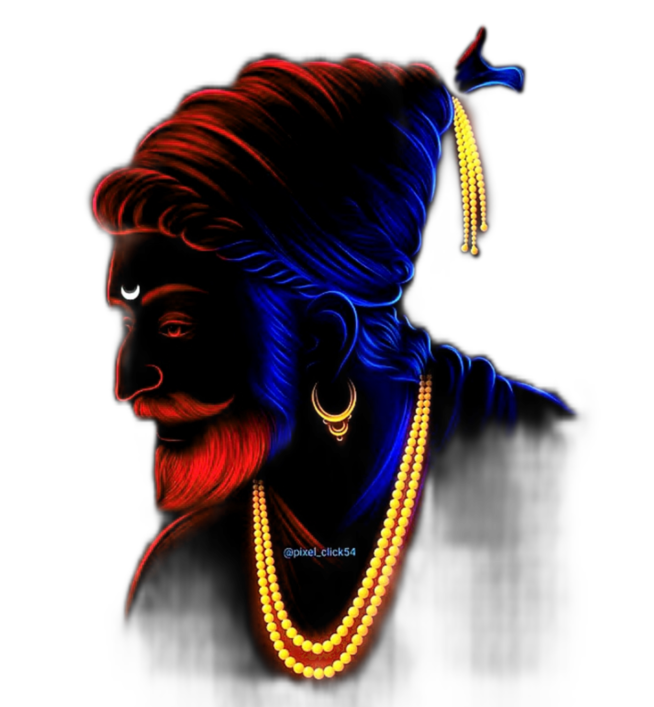
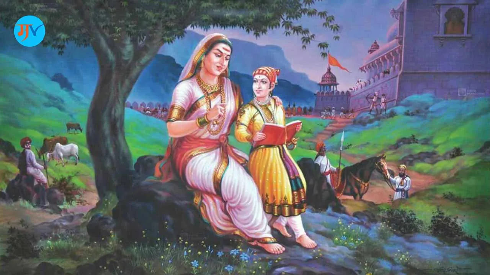
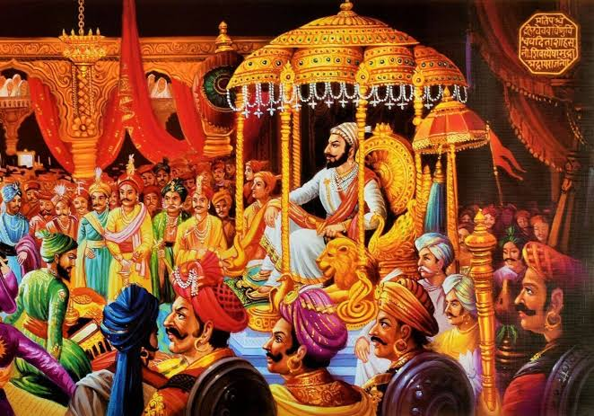
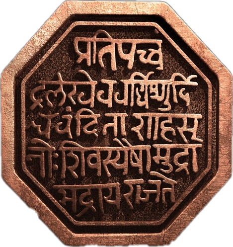
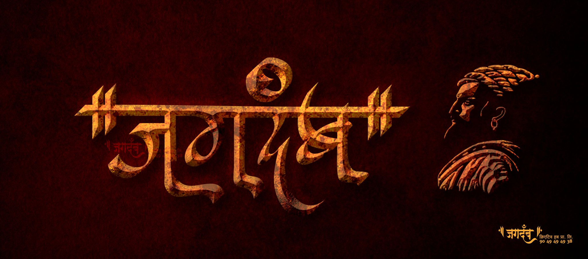

Chhatrapati
Shivaji Maharaj

About
Chhatrapati Shivaji Maharaj, a 17th-century Maratha warrior-king, is revered for his remarkable military and administrative achievements in the face of formidable adversaries. Born in 1630, he established the Maratha Empire, known for its strategic forts, innovative military tactics, and inclusive governance. Shivaji's legacy embodies courage, leadership, and a vision for a sovereign Maratha state in India.
Early life
Chhatrapati Shivaji Maharaj was born on April 10, 1627, in the hill fort of Shivneri, near Junnar in Pune district, Maharashtra. He was born into the Bhosle clan of Maratha origin. His father, Shahaji Bhosle, was a prominent Maratha general, and his mother, Jijabai, was a devout Hindu. Shivaji's upbringing was influenced by his mother's teachings of Hindu epics and valorous stories of Maratha warriors, instilling in him a strong sense of duty, courage, and pride in his heritage.
Military Achievements
Chhatrapati Shivaji Maharaj is renowned for his numerous military achievements, which transformed him into a legendary figure in Indian history.
Maratha Navy
Shivaji realized the importance ofa strong navy and commissioned
the building the first Indian
Navy around 1654.He also
established the maratha empire.
Read more
Guerrilla Warfare
Shivaji understood that facing theformidable Mughal Empire head-on
was a losing battle. Instead, he
adopted a hit-and-run use of
guerrilla warfare strategy.
Read more
Capture of fort
Battle of Sinhagad was one of thefirst forts which Shivaji recaptured
from the Mughals.Tanaji Malusare was
killed, but the fort was captured by
the Marathas.
Read more
Battle of pratapgad
The Battle of Pratapgad took placeon 10 November 1649 The battle was
between the Maratha forces led by
Chhatrapati Shivaji and the Bijapur
troops under General Afzal Khan.
Read more
These military achievements not only expanded Shivaji's Maratha Kingdom but also inspired future generations of Indian leaders in their struggles against colonial powers.
Administrative and Governance
Shivaji Maharaj introduced Maratha empire's Administration System commonly known as AshtaPradhan Mandal meaning “the council of eight” . The eight Ministerial roles were as follow. Pantpradhan or Peshwa - Prime minister , General Administrator of empire “Moropant Traymbak Pingle” was first Peshwa appointed by Shivaji.
Shivaji Maharaj developed an orderly administrative structure that was distinguished by strategic fort management, effective tax administration, and judicial reforms. In order to provide equitable taxation and stable economic conditions, he established a revenue system based on land assessment. His judicial reforms placed a strong emphasis on accessibility and impartiality, ensuring that everyone, regardless of status, could receive justice. Shivaji constructed a network of strongholds that functioned as command and administrative hubs by carefully managing forts to safeguard his domains. The Maratha Empire prospered because to its strong military, just courts, and efficient government.
Quotes and sayings
RAJMUDRA
प्रतिपत् चंद्र लेख इव वर्धिष्णुः विश्ववन्दिता।
शाहसुनो शिवस्य एषा मुद्रा भद्राय राजते॥
- “Freedom is a boon, which everyone has the right to receive.”
- “Never bend your head, always hold it high.”
- “Do not think of the enemy as weak, but do not also overestimate their strength.”
Important and impact
on Indian history and culture
Chhatrapati Shivaji Maharaj's influence on Indian history and culture is profound. Hechallenging the mighty Mughal Empire and establishing a sovereign Maratha kingdom. His administration emphasized justice, religious tolerance, and welfare policies, laying the foundation for modern governance. Shivaji's valor and leadership continue to inspire generations, symbolizing resistance against oppression and the spirit of independence in Indian culture.
